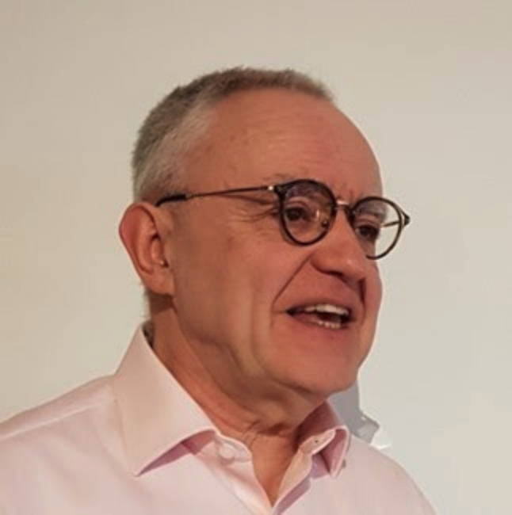

ISCC Foundation Board#
Board of Directors#
CEO of Posth Werk BV, Chairman of the Board of the ISCC Foundation
Sebastian is an entrepreneur and consultant in the media industries with a focus on digital innovation and decentralized ledger technology. (Photo: Private)
Treasurer ISCC Foundation, COO Craft AG
Kira is co-founder and COO of Craft AG. She is a specialist for business development and financial development for new business models and monetization strategies.
Director ISCC Foundation, CEO Craft AG
Titusz Pan is an entrepreneur and open-source developer. He is the inventor and architect of the ISCC. As co-founder and CEO of Craft AG, he has been developing media technology projects and incubations since the year 2000.
Advisory Board#
Access Copyright, The Canadian Copyright Licensing Agency
An internationally recognized champion of creator rights, Roanie Levy is the CEO of Access Copyright, a collective that distributes millions of dollars annually in licensing royalties to creator and publisher affiliates in Canada, and also leads Prescient Innovations, Access Copyright’s innovation lab, which seeks to change the compensation paradigm for creators. Roanie bridges the worlds of intellectual property law, content rights management and exponential technologies together to represent and advocate for creators and rightsholders. (Photo by Jennifer Rowsom)
TIB – Leibniz Information Centre for Science and Technology
In 2013 Lambert founded the Open Science Lab at TIB, in Hannover, Germany. The lab runs a number of national and international grant projects, focussing mostly on the development of open research infrastructures (e.g. researcher profile systems based on linked open data), and creative use cases for digital collections in libraries, archives and museums, e.g. through hackathons. (Photo: Lilli Iliev (WMDE) / CC BY-SA)

Industry Associate, Centre for Blockchain Technologies, University College London
Philippe Rixhon is a systems and policy engineer working on value flows in content ecosystems and the holistic implementation of copyright law. He is currently blueprinting Electronic Markets for Media Assets and their underlying rights register. (Photo: Private)
Head of Blockchain Research / Doctoral Researcher, Institute for Internet Security, Westphalian University of Applied Sciences
Kevin is leading a blockchain research group and is a member of the Sovrin Steward Council (Digital Identity and SSI) and the bloxberg consortium (Trusted Research Infrastructure) as well as active Open Source maintainer and contributor.
After many years working in the industry as a software engineer, Kevin moved back to academia and is now pursuing a PhD in computer science in the field of distributed systems engineering. (Photo: Private)
https://www.linkedin.com/in/kevin-wittek/ https://twitter.com/kiview